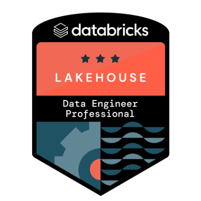
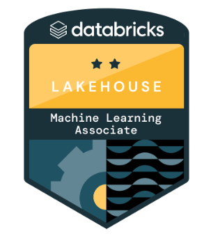

Hi, my name is
Patrick Kozlow.
I build innovative data solutions for enterprise clients.
I'm a Data Engineer and Machine Learning Engineer specializing in Big Data, Data & AI strategies, and cloud architectures. Currently, I'm focused on designing scalable cloud solutions within Microsoft Azure, utilizing resources such as Azure Data Factory, Azure Data Lake, Databricks, and Azure Machine Learning Service to extract valuable business insights.
Check out my workAbout Me
Hello! I'm Patrick, an experienced Data Engineer and Cloud Architect with a passion for transforming complex technical challenges into elegant, efficient solutions. My journey spans designing scalable cloud solutions within Microsoft Azure to building predictive ML models that drive real business value.
I have a proven track record of leading data-driven teams, optimizing data workflows, and enhancing data governance practices to drive positive outcomes for customer experience. Whether it's working in high-stress situations, directly with executives, or speaking to hundreds of people, I bring both technical expertise and exceptional communication skills.
My technical versatility allows me to seamlessly integrate cloud infrastructure toolchains such as Azure/AWS/Snowflake into product designs, develop and test predictive ML models, and build high-performance data processing systems that deliver actionable insights.
Here are a few technologies I've been working with recently:
- Python
- SQL / T-SQL
- C / C++
- JavaScript / HTML / CSS
- Azure Data Factory
- Azure Databricks
- Azure Synapse Analytics
- Azure ML Service
- TensorFlow / PyTorch
- Pandas / NumPy
- Scikit-learn
- Apache Spark

Certifications





Resume
My professional journey spans multiple roles in data engineering, from machine learning research to enterprise cloud architecture. I offer comprehensive expertise in building scalable, resilient data solutions that drive measurable ROI.
Personal Skills
Whether it's working in high-stress situations, directly with executives, or speaking to hundreds of people, I've done it all. If you're looking for an engineer that cares about communication, customer service, and business needs, you've found the right person.
Technical Skills
I have experience building data systems that use ETL processes along with data warehousing techniques to store & analyze batch and streaming data. My skillset includes integrating cloud infrastructure toolchains such as Azure/AWS/Snowflake into product designs.
Programming Languages
Proficient with Python, SQL, C, C++, and JavaScript/HTML/CSS. And frameworks such as Pandas, TensorFlow, Scikit-learn, NumPy, and PyTorch.
Where I've Worked
Senior Data Engineer @ Air Canada
Aug 2022 – Aug 2024
- Led cross-functional teams in delivering Proof of Concepts (POCs) and scaling productionized data architecture solutions, achieving a 20% reduction in initial costs while meeting timelines and balancing feature requests.
- Engineered ingestion and data transformation workflows leveraging Azure and Big Data technologies, developing predictive simulation models that resulted in optimizing multiple KPIs and achieving a 10% increase in on-time performance for passenger flights.
- Designed and implemented modernized enterprise data architecture solutions within Microsoft Azure, leveraging serverless technologies to scale data processing capabilities and significantly reduce storage overheads by over 100GB.
- Led orchestration of automated ETL pipelines within Databricks and Microsoft Azure, reducing processing time from hours to minutes through caching and computational resource optimization.
- Acted as subject matter expert providing technical guidance for data-related initiatives, developing mission-critical data architecture blueprints aligned with business objectives and implementing robust data quality monitoring procedures that enhanced data accuracy by 20%.
Data Engineer @ Nureva Inc.
Feb 2019 – Aug 2022
- Applied problem-solving & leadership skills to establish an alignment between stakeholder needs and engineering best practices, as well as successfully execute multiple cross-functional project plans.
- Managed teams utilizing Git, JIRA, and agile methodologies, optimizing workflows, resolving production issues, and performing root cause analysis to manage risk in project deliverables.
- Developed and automated high-performance data processing systems using SQL, NoSQL, Python, Hadoop, and Spark to drive actionable insights derived from data analytics to improve user experiences.
- Effectively managed critical customer issues and navigated challenging situations, demonstrating a strong ability to cultivate strategic and enduring customer relationships.
Data Architect @ OrbSurgical Ltd.
Oct 2018 – Feb 2019
- Directed documentation and prototypes for $1M+ projects, aligning end-user needs with modernized solutions.
- Facilitated seamless collaboration between data source teams, optimizing Big Data Warehousing solutions and reducing outgoing data fallout by 30% through staging tables and schema enhancements.
- Enhanced SQL query speed and readability by reorganizing fact and dimension table schemas, contributing to ongoing quality improvements through leadership and code reviews.
- Demonstrated a flexible approach to problem-solving and troubleshooting within the customer success domain, ensuring swift and effective resolution of issues.
Graduate Assistant @ University of Calgary
(Research & Teaching)
Aug 2016 - May 2018
- Created and delivered engaging material using various methods of written communication on topics such as C++, SQL, Python, and data-related subjects, fostering a dynamic learning environment.
- Enhanced communication strategies for academic groups by reviewing instructional content, ensuring alignment with the organization's commitment to effective education and knowledge sharing.
- Managed Git repositories with up-to-date information, facilitating the seamless merging of project features designed by students. Optimizing version control systems and collaborative development practices.
- Contributed as a key participant in various research panels, utilizing presentation skills to initiate discussions on diverse topics such as biometric applications, data governance, and security.
Engineering Technical Writer @ Arc Reactions Inc.
2016-2017
- Researched and created articles that highlighted new developments occurring in the energy sector related to engineering.
- Conducted peer reviews for materials published by colleagues as well as provided feedback.
- Responsible for organizing interviews and scheduling meetings between key individuals from growing industries.
Some Things I've Built
Featured Project
AWS IoT Streaming
A comprehensive IoT streaming platform leveraging AWS services to collect, process, and visualize real-time sensor data. Implemented scalable architecture using AWS IoT Core, Kinesis, and Lambda for high-throughput data ingestion and processing.
- AWS IoT Core
- AWS Kinesis
- AWS Lambda
- Python
- DynamoDB

Featured Project
Gait Trait Analyzer
Contactless biometric gait analysis system using computer vision and machine learning. Utilizes a virtual 3D skeleton to extract unique gait traits and construct behavioral models in real-time for security and identification applications.
- Python
- OpenCV
- TensorFlow
- Scikit-learn
- Kinect SDK

Other Noteworthy Projects
Smart Forceps
Stream real-time feedback data to improve motor skills for surgeons through haptic feedback and motion tracking.
- Embedded C
- Arduino
- IoT
Income Classification
Testing and tuning multiple classification algorithms on public income database, comparing performance of decision trees, logistic regression, and KNN.
- Python
- Scikit-learn
- Pandas
Get In Touch
I'd love to hear from you if you're looking for a consultation or even if you just have a general inquiry. Whether you have a project in mind or just want to say hi, I'll do my best to get back to you!
Please fill out the form below with your inquiry and we'll be in touch.